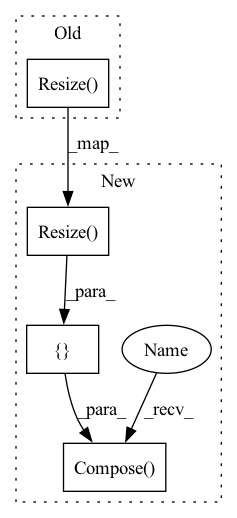

Pattern ID :32230

Before Change
self.transform = T.Compose([
T.Lambda(lambda img: img.convert("RGB") if img.mode != "RGB" else img),
T.Resize(self.img_size),
T.CenterCrop(self.img_size),
T.ToTensor(),
T.Normalize(((0.5,) * 3, (0.5,) * 3)),
After Change
T.ToTensor(),
T.Normalize((0.5, 0.5, 0.5), (0.5, 0.5, 0.5)),
])
self.transform_val = T.Compose([
T.Lambda(lambda img: img.convert("RGB") if img.mode != "RGB" else img),
T.Resize(img_size),
T.CenterCrop(img_size),
T.ToTensor(),
T.Normalize((0.5, 0.5, 0.5), (0.5, 0.5, 0.5)),
])
def setup(self, stage=None):
if self.fake_data:
self.train_dataset = FakeData(1200000, (3, self.img_size, self.img_size), 1000, self.transform_train)
In pattern: SUPERPATTERN
Frequency: 4
Non-data size: 4
Instances
Fragment ID: 94333947
Project Name: tgisaturday/dalle-lightning
Commit Name: 84728b859d4d3a7ec20af6c29427936925dcfc47
Time: 2021-07-15
Author: jamesk1228@gmail.com
File Name: pl_dalle/loader.py
M Class Name: ImageDataModule
N Class Name: ImageDataModule
M Method Name: __init__(8)
N Method Name: __init__(7)
M Parent Class: LightningDataModule
N Parent Class: LightningDataModule
M File Name: pl_dalle/loader.py
N File Name: pl_dalle/loader.py
M Start Line: 20
M End Line: 27
N Start Line: 13
N End Line: 35
'>
Before Change
def get_val_transforms(cfg):
return T.Compose(
T.Resize(tuple(map(lambda x: int(x / 0.9), cfg["EVAL"]["IMAGE_SIZE"]))), // to main aspect ratio
T.CenterCrop(cfg["EVAL"]["IMAGE_SIZE"]),
T.ToTensor(),
T.Normalize([0.485, 0.456, 0.406], [0.229, 0.224, 0.225])
After Change
])
def get_val_transforms(size):
return T.Compose([
T.Resize(tuple(map(lambda x: int(x / 0.9), size))), // to main aspect ratio
T.CenterCrop(size),
T.ToTensor(),
T.Normalize([0.485, 0.456, 0.406], [0.229, 0.224, 0.225])
])
'>
Fragment ID: 94333946
Project Name: sithu31296/sota-backbones
Commit Name: 2d1e57c0a24750ea4964796828333728804bed1d
Time: 2022-05-07
Author: sithu31296@gmail.com
File Name: datasets/transforms.py
M Class Name: AnonimousClass
N Class Name: AnonimousClass
M Method Name: get_val_transforms(1)
N Method Name: get_val_transforms(1)
M Parent Class:
N Parent Class:
M File Name: datasets/transforms.py
N File Name: datasets/transforms.py
M Start Line: 18
M End Line: 23
N Start Line: 18
N End Line: 23
'>
Before Change
])
image_to_pymaf_tensor = transforms.Compose([
transforms.Resize(224),
transforms.Normalize(mean=constants.IMG_NORM_MEAN,
std=constants.IMG_NORM_STD)
])
After Change
std=constants.IMG_NORM_STD)
])
image_to_pixie_tensor = transforms.Compose([
transforms.Resize(224)
])
return [image_to_tensor, mask_to_tensor, image_to_pymaf_tensor, image_to_pixie_tensor]
'>
Fragment ID: 94333941
Project Name: yuliangxiu/icon
Commit Name: 928340e6701fb3292e9f1f109ebce4093844a575
Time: 2022-03-05
Author: yuliang.xiu@tuebingen.mpg.de
File Name: lib/pymaf/utils/imutils.py
M Class Name: AnonimousClass
N Class Name: AnonimousClass
M Method Name: get_transformer(1)
N Method Name: get_transformer(1)
M Parent Class:
N Parent Class:
M File Name: lib/pymaf/utils/imutils.py
N File Name: lib/pymaf/utils/imutils.py
M Start Line: 52
M End Line: 70
N Start Line: 52
N End Line: 74